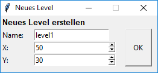
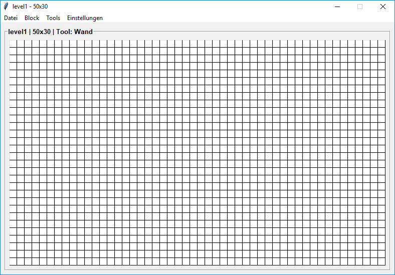

"Snake ist ein Computerspielklassiker, bei dem eine sich gerade oder rechtwinklig bewegende Schlange durch ein Spielfeld gesteuert wird. Ziel des Spieles ist, die als Futter angebotenen zufällig erscheinenden "Happen" aufzunehmen und Hindernissen, einschließlich des eigenen Schlangenkörpers, auszuweichen. Während die Schlange mit jedem Happen wächst, wird das Manövrieren bei zunehmend vollerem Spielfeld – und bei evtl. schnellerem Grundtakt – immer schwieriger." - www.wikipedia.org/wiki/Snake
Snake kann im Endlosmodus sowie im Levelmodus gespielt werden. Im Levelmodus muss die Schlange alle Äpfel einsammeln, dann erscheint der Ausgang, der zum Bestehen des Levels erreicht werden muss. Diese vordefinierten Level werden häufig als Textdateien gespeichert, wobei ein Zeichen einem Block im Spiel entspricht.
Beispiel:
HHHHHHHHHHHHHHHHHHHHHHHHHHHHHH H H H H H H A H A A H H S H H H H H H H H HHHHHHHHH H H H H H H H H H H H H H H H H H A H H H A H A H H H H H H H H H A H H H H HHHHH H H H H A H H H H H H H H A H H H H H H H H H A H H H HHHHHHHHH H H H H H H H H: Wand H A H H H H H H A: Apfel H H H H A H H A E H S: Schlange H H H H E: Ausgang H H H H HHHHHHHHHHHHHHHHHHHHHHHHHHHHHH
Da das manuelle Erstellen eines solchen Levels im Texteditor sehr mühsam und langwierig ist, habe ich den Snake Level Editor erstellt:

Nach Bestätigung der Eingabe öffnet sich der eigentliche Editor:

Standartmäßig ist das Tool "Wand" ausgewählt. Ein Klick auf einen weißen Pixel färbt diesen mit dem aktuellen Tool. Hat der Pixel bereits eine Farbe, wird er beim Anklicken wieder weiß.
Erläuterung der Einzelnen Menüpunkte:
- Datei
- Schnellexport → Exportiert das aktuelle Level als Textdatei auf den Desktop. (C:\Users\%USER%\Desktop\level.txt)
- Export → Wie "Schnellexport", jedoch ermöglicht ein zusätzlicher Dialog das hinzufügen weiterer Daten zur Textdatei. (Optional, für manche Snake-Level-Loader hilfreich.)
- Schließen → Beendet das Programm. (Nicht gespeicherter Fortschritt geht verloren!)
- Block
- Wand → Rüstet "Wand" als aktuellen Block aus.
- Apfel → Rüstet "Apfel" als aktuellen Block aus.
- Schlange → Rüstet "Schlange" als aktuellen Block aus. (Max. 1 pro Level erlaubt, falls dieser Block bereits im Level platziert ist, wird die alte Position gelöscht.)
- Ausgang → Rüstet "Ausgang" als aktuellen Block aus. (Max. 1 pro Level erlaubt, falls dieser Block bereits im Level platziert ist, wird die alte Position gelöscht.)
- Tools
- Rahmen → Zieht einen Rahmen aus Wänden um das Level.
- Graph → Verbindet 2 gewählte Punkte mit Wand-Blöcken wenn diese die gleiche X-, oder Y-Koordinate haben.
- Leeren → Setzt alle Pixel auf Weiß.
- Einstellungen
- Einstellungen → Öffnet ein Einstellungsmenü, in dem die Pixelgröße und Gitterbreite des Editors eingestellt werden kann.
- Exporteinstellungen → Öffnet ein Einstellungsmenü, in dem die Codierung der einzelnen Blöcke bearbeitet werden kann.
- Tutorial → Öffnet ein Hilfsfenster.